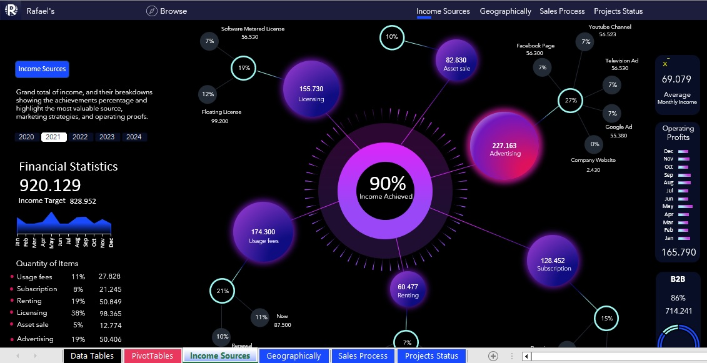
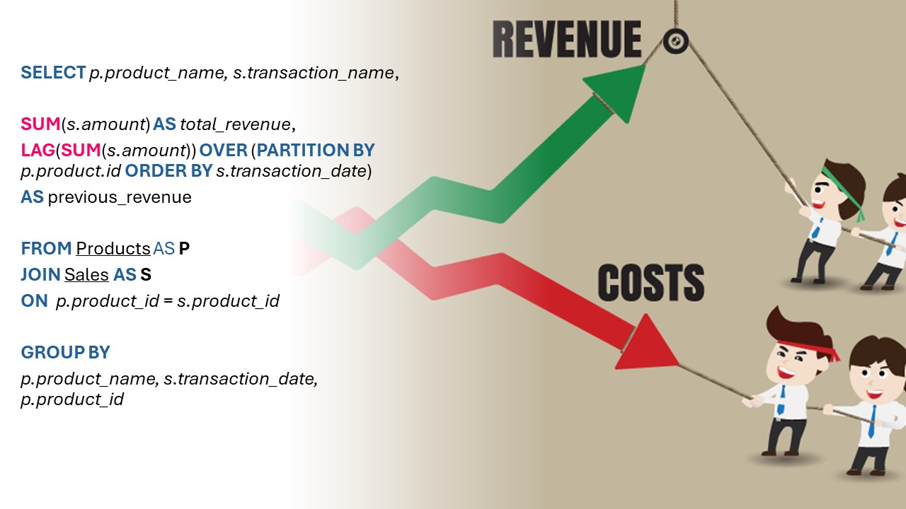
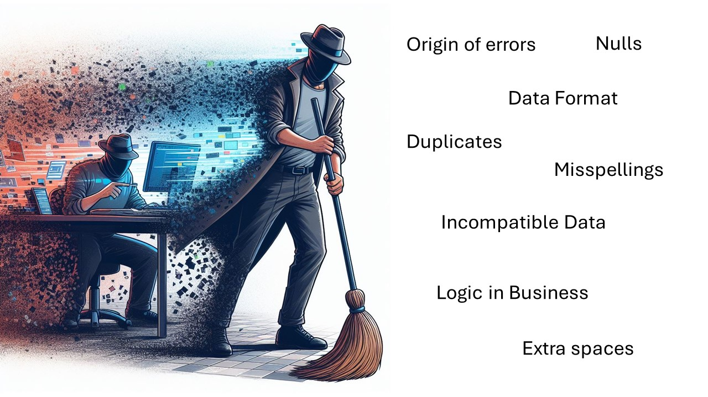
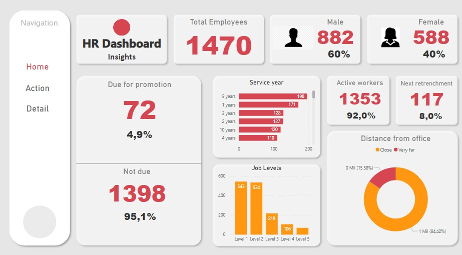
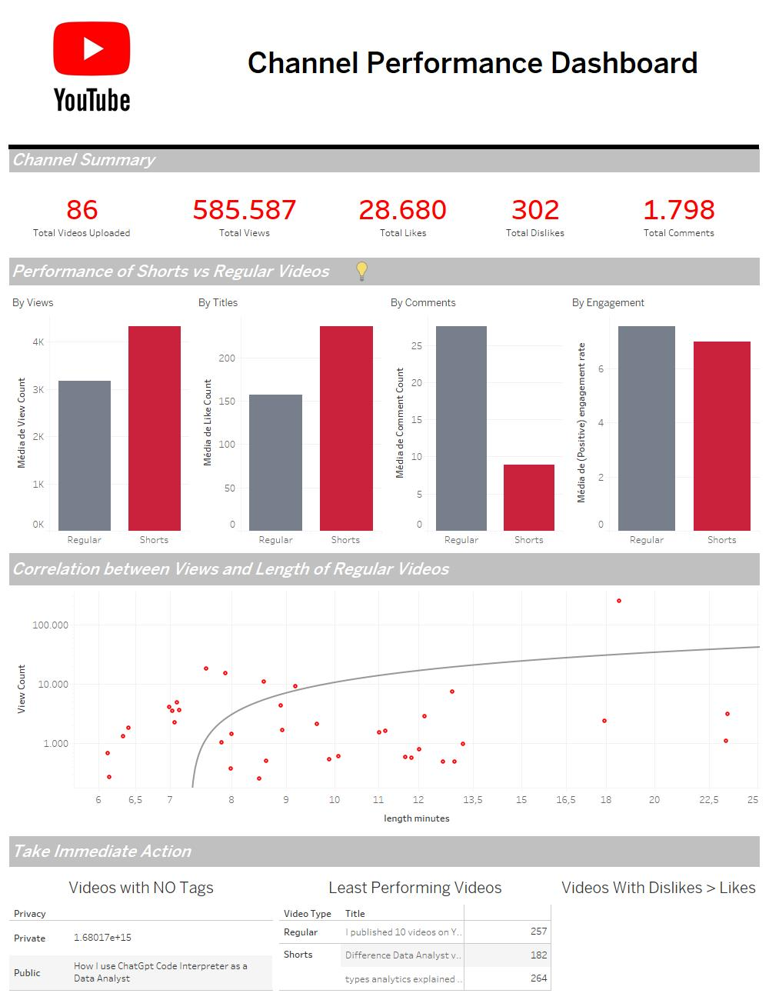
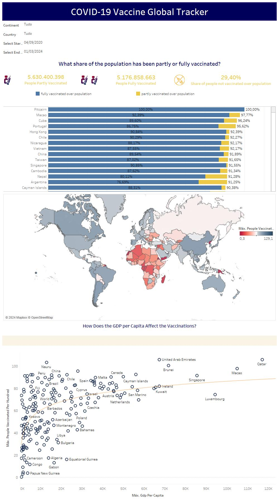
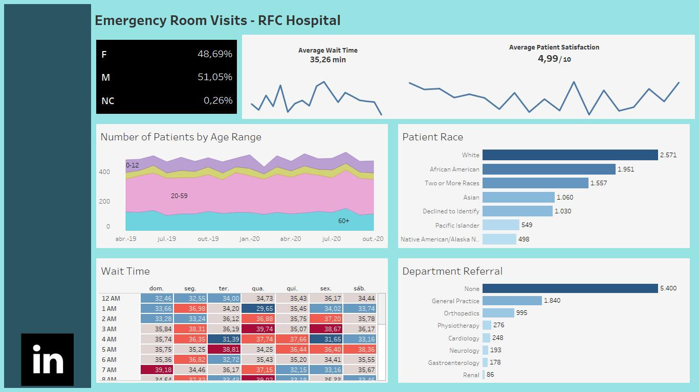

Case Study: How Can a Wellness Technology Company Play It Smart? To answer key business questions, this project contains various real-world tasks of a data analyst following the steps of the data analysis process: Ask, Prepare, Process, Analyze, Share, and Act. The analyses were carried out in RStudio.
Case Study II: How does a bike-share navigate speedy success? This project is made as a condition for the completion of Google Data Analytics Professional Certificate. The analyses were carried out on Google BigQuery Sandbox .

Financial statistics dashboard system created in Excel.

Aiming to optimize the operational efficiency and financial return of a company, I made the following queries in SQL Server Management Studio: 1) Set up SQL Database;
2) Find highest spending customers; 3) Find duplicate records; 4) Common table expression (CTE) to find Top selling products;
5) Calculate Revenue Growth by using LAG function; 6) Find the most recent Order Dates; 7) Find out which supplier had the highest
sales using CTE; 8) Analyzing product performance and cumalative sales; 9) Compare product sales for given months and rank the products based on Sales Growth.
Exploring some Covid-19 data using SQL Server Management Studio.

Small mistakes can lead to big consequences in the long run. Therefore, clean data is very important for effective analysis. In this project, SQL Server Management Studio was used to clean data about housing in Nashville.

Getting started with Power BI

Exploring the performance of a YouTube channel and creating a dashboard to visualize the main trends.

A dashboard was recreated from scratch using Tableau that analyzes the performance of the COVID-19 vaccination program worldwide.

It was created as an emergency dashboard in Tableau using fake real-world data (#RWFD).

After exploring data on COVID-19 using SQL, a dashboard was created with the main results.